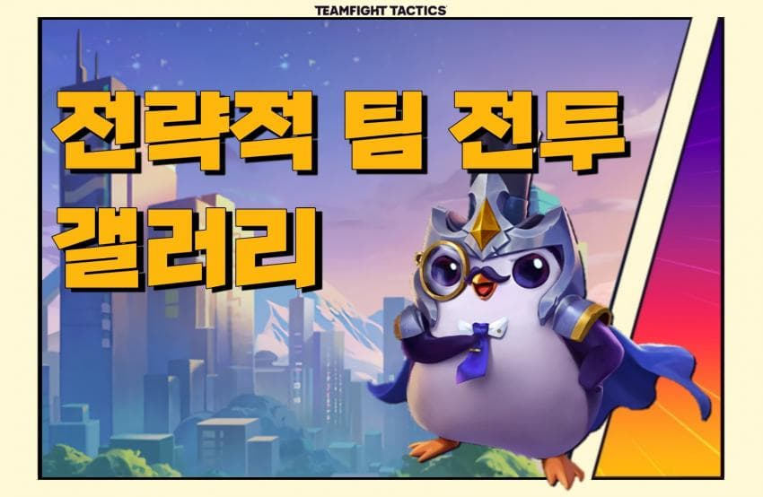

게임의 전반적인 정보는 '롤체지지'에 잘 정리 되어 있다
기본적으로 갤러리 내 공략탭, 각종사이트, 유튜브를 통해 정보를 찾아보는걸 추천
- 노후화 방지를 위해 공략글과 정보글은 계속 첨삭할 예정
- 개인적으로 추천하는 글은 뒤에 * 표시
- 댓글에 수정이나 추가가 필요한 정보 남겨주면 본문에 반영
[공략돚거](마지막 갱신일 2022.12.23)
빌드업 공략
삼신기 공략
최종덱 공략(1)
최종덱 공략(2)
디테일한 기본기*
랭킹2위의 메모
순방팁
[관련사이트]대표적인 기능사이트
롤체지지
기본가이드, 티어덱, 전적 검색, 배치툴
메타tft
증강 아이템 특성별 티어표, 사기주사위 확률, 고서 확률
tftps.gg
덱티어, 증강시뮬
출처:https://gall.dcinside.com/mgallery/board/view/?id=tft&no=1570556&page=1